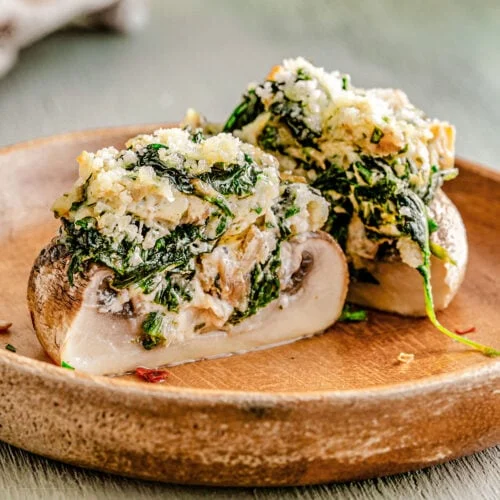

To Homepage
Stuffed Mushrooms

Description
The Stuffed Mushrooms Recipe comes together in 30 minutes. You can prep and stuff the mushrooms
in advance and then bake them when ready at 400 F for 20 minutes, this way you ensure a stress-free
party preparation.
Ingredients
- button white mushrooms
- cooking spray (olive oil or butter spray will work, too)
- cream cheese
- shallot or onion
- garlic (optional)
- salt
- black pepper
- cornichons or pickles
- fresh dill (optional)
- Parmesan cheese
Steps
- Clean mushrooms and carefully remove the stems.
- Place mushrooms on a greased baking dish. season with salt and pepper.
- Dice the stems. Chop a shallot.
- Finely dice cornichons (pickles).
- Heat some butter in a pan. Add the chopped mushroom stems. Add shallot and garlic.
Season with salt and pepper. Cook for 4-5 minutes over medium heat, until the liquid
evaporates, stirring frequently. Remove from heat.
- In a bowl, combine softened cream cheese, cornichons, cooked mushroom stems, Parmesan,
dill, black pepper and season with salt if needed.
- Add about 1 tablespoon or less to each mushroom. Top with Parmesan cheese.
- Bake for 20 minutes at 400 F.
- Serve.